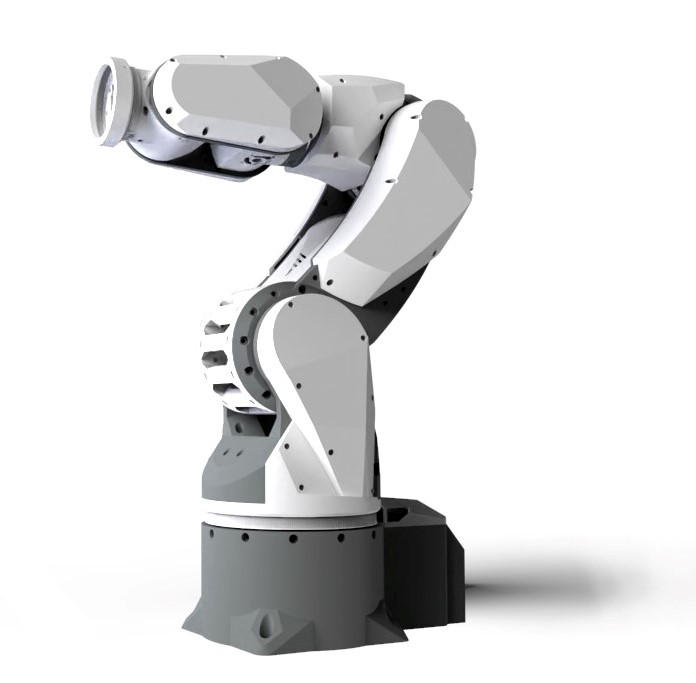
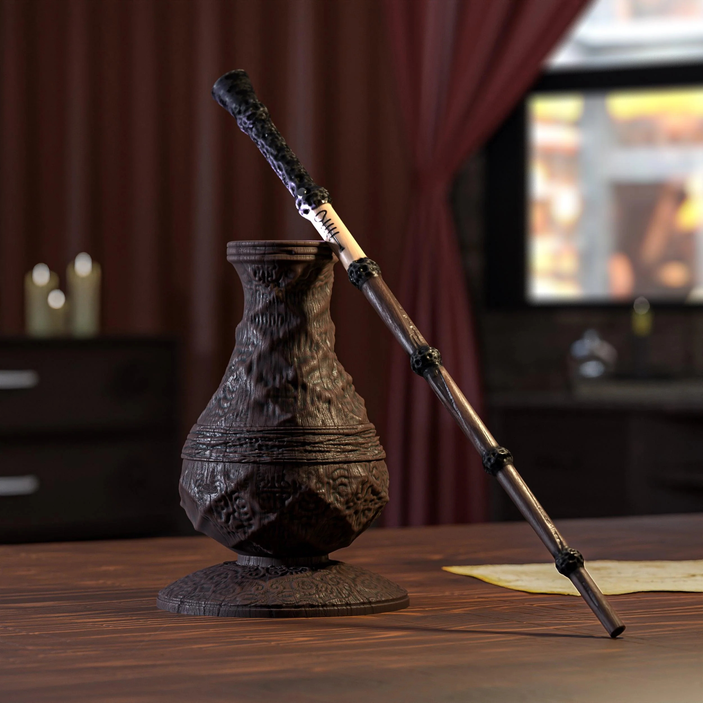

<div class="textcontainer">
<br></br>
<h3>Week 1: Final Project Proposal</h3>
<p class = "margin"></p>
Here are 2 ideas for my final project
<p class = "margin"></p>
<h4>Idea 1 : Remote Arm</h4>
<p class = "margin"></p>
I have always been fascinated with the concept of live mimicry/communication between
two objects. This first idea here stems from Doctor Octavius' arm. The goal is you can create a robotic arm and control its movement
through motors based on a remote control
unit (for example, a joystick) over radio communication. Another extension to
this may be instead to control the movement based on strappable sensors to
one's hand: moving the thumb, for example, can signal the robot to rotate
its base motor in a certain direction. This arm design shown below is very similar to
what I had in mind. Some possible components I may use include radio communication, a microcontroller,
a servo for rotation, and an accelerometer for movement-detection.
<br/><br/>

<p class = "margin"></p>
<h4>Idea 2: Magical Wand </h4>
<p class = "margin"></p>
This second idea also stems from the ability to control one object with another
(in other words, let it respond through mimicry or a pre-defined response).
Here, the goal would be to create a wand that can cause another unit (such as a light)
to respond based on the movement-pattern of the wand. For example, a sharp flick
would light up the light with a bright-safe flash. If this can somehow be combined
with the first idea, I could potentially pursue that avenue as well.
Some possible components I may use include radio communication, a microcontroller,
and an accelerometer for movement-detection.
<br/><br/>

<p class = "margin"></p>
</div>